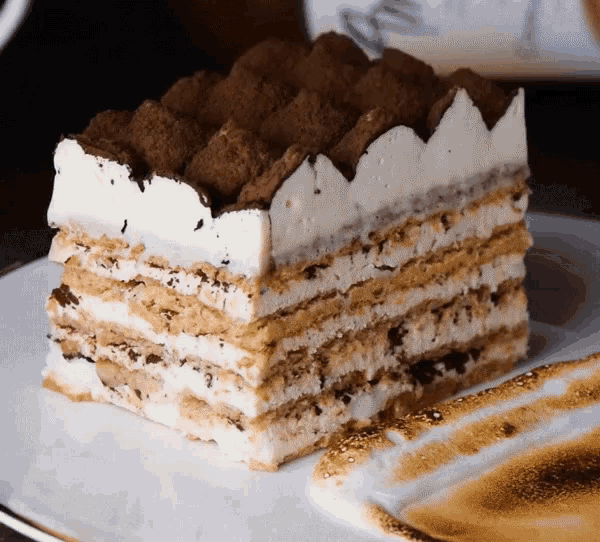

Dessert recipes.
These are some desserts and the recipes so you are able to make them.

Strawberry Shortcake
- Strawberry shortcake parties became popular in the United States around 1850, as a celebration of the coming of summer.
- The 2012 Pasadena Strawberry Festival featured the world's largest strawberry shortcake.
- The first strawberry shortcakes were made with heavy pastry that was somewhat similar to pie crust but a little thicker.

Chocolate Cupcakes
- Cupcakes were actually originally called “Number Cakes” or “1234 Cakes” because it was an easy way to remember portions.
- Original cupcake recipes were not frosted, and usually were usually just flavored with spices or dried fruit.
- Cupcakes gained popularity in 1919 when Hostess became mass producing them. But they weren’t the cream filled, frosted kind we all know until the 1950’s.

Fudge Brownies
- The first brownie ever made was actually a mistake.
- National Brownie Day takes place annually on December 8th.
- Brownies are considered a “comfort food” where, when eaten, traditionally provides a nostalgic or sometimes sentimental feeling to the person eating it.

Red Velvet Cakepops
- March 24 is National Cake Pop Day.
- In 2011, cake pops were considered the newest and most popular confectionery food trends.

Chocolate Covered Pretzels
- The exact history is unknown.
- Chocolate Covered Pretzels are a great snack because it combines but chocolate and pretzels. .

Birthday Cake
- In the UK, nearly £368million is spent on whole cakes per year, which includes the birthday cake!
- What flavour would your ideal birthday cake be? Well, according to research the most popular choice is chocolate..

Chocolate Chip Cookies
- 13.5% of American adults admit to having eaten 20 or more chocolate chip cookies at a time.
- Chocolate chip cookies are among only four foods acceptable to even the pickiest of eaters.

Jello
- Utah eats more Jell-O than any other state.
- 75% of Americans have Jell-O at home.
- A full week in February is dedicated to Jell-O.